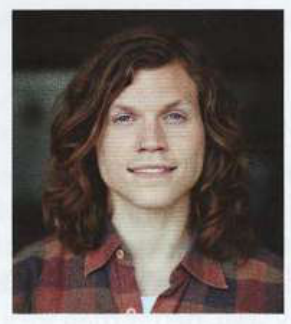

Bài tập
6.1
Nhìn vào tên các tiệm làm tóc ở phần A trang đối diện. Những bức tranh này làm bạn liên tưởng đến những thành ngữ nào?
1
2

3
6.2
Các câu dưới đây đều sử dụng các thành ngữ từ trang đối diện. Tại sao chúng lại hài hước? Hãy sử dụng từ điển để tìm cả nghĩa thành ngữ và nghĩa đen của các diễn đạt này nếu cần.
1
Tôi được mời làm việc tại một tiệm làm tóc nhưng fringe benefits (phúc lợi phụ) không tốt lắm, nên tôi đã từ chối.
2
Cả John và Emma đều làm phát thanh viên cho đài phát thanh địa phương, nên tôi không ngạc nhiên khi họ luôn on the same wavelength (cùng tần số / cùng suy nghĩ).
3
Khán giả đã bị blown away (ấn tượng mạnh / bị thổi bay) bởi phần độc tấu của Tom trong cuộc thi nhạc cụ hơi.
4
Đi bộ nhiều và mang túi nặng là part and parcel (phần thiết yếu) của công việc bưu tá.
5
Hai ngôi sao điện ảnh đã got their act together (chấn chỉnh lại hành vi / thu xếp ổn thỏa) và giải quyết các vấn đề hôn nhân của họ.
6.3
Hoàn thành mỗi thành ngữ.
1
The money was burning .................................................... my pocket. (Số tiền đó như đang thiêu đốt... túi của tôi.)
2
Her two brothers don't see .................................................... and haven't spoken to each other for over a year. (Hai anh em cô ấy không cùng quan điểm... và đã không nói chuyện với nhau hơn một năm.)
3
Learning how to manage your finances is part .................................................... of becoming an adult. (Học cách quản lý tài chính là phần... của việc trưởng thành.)
4
It's time you got .................................................... and found a job! (Đã đến lúc bạn chấn chỉnh... và tìm một công việc rồi!)
5
The president refused to make a decision and was accused of sitting .................................................... . (Tổng thống từ chối đưa ra quyết định và bị cáo buộc là lưỡng lự...)
6
My computer crashed, so I'm back to .................................................... with my assignment. (Máy tính của tôi bị hỏng, nên tôi phải quay lại... với bài tập của mình.)
6.4
Nối các thành ngữ bên trái với các công ty hoặc tổ chức phù hợp bên phải.
| 1 BACK TO SQUARE ONE (trở lại vạch xuất phát) | a a delivery firm (công ty giao hàng) | |
| 2 GETTING OUR ACT TOGETHER (chấn chỉnh lại hành vi) | b a gardening company (công ty làm vườn) | |
| 3 PART AND PARCEL (phần thiết yếu) | c a company that makes board games (công ty sản xuất trò chơi cờ bàn) | |
| 4 SITTING ON THE FENCE (lưỡng lự / trung lập) | d a local drama club (câu lạc bộ kịch địa phương) |
Đến lượt bạn
Bạn nghĩ những thành ngữ dưới đây từ các bài học khác trong cuốn sách này có thể được dùng để quảng cáo cho các sản phẩm, tổ chức hoặc dịch vụ nào?
- it never rains but it pours (họa vô đơn chí) (Unit 11)
- fighting fit (cực kỳ khỏe mạnh) (Unit 47)
- two left feet (vụng về / nhảy tệ) (Unit 50)